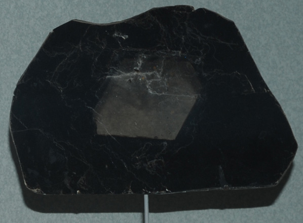

| This sample from the Smithsonian Museum of Natural History shows the darker biotite with a center of the lighter muscovite. The sample is from Spruce Pine, North Carolina and is about 11 cm wide.
According to Mindat, biotite is now a discouraged name because it refers to a series of similar minerals from the mica family. The more specific mineral names annite, eastonite, phlogopite and siderophyllite are used in technical literature. |  |